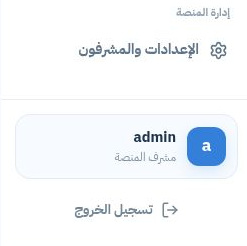

منصة هِمّة التعليمية
دليل المشرف
إدارة أوضح، متابعة أدق.
دليل مصوّر يشرح إدارة الطلاب ومتابعة القراءة والمحتوى والتقارير، بخطوات واضحة وصور من لوحة المشرف.

أتعلم، أتطور، أصل إلى القمة
himma-om.com
منصة هِمّة التعليمية
دليل مصوّر يشرح إدارة الطلاب ومتابعة القراءة والمحتوى والتقارير، بخطوات واضحة وصور من لوحة المشرف.
himma-om.com
ابدأ من هنا
اختر الصفحة التي تحتاجها. تشير الأرقام على الصورة إلى شرح العناصر، وتجمع البطاقة الخضراء خطوات الاستخدام بالترتيب.
01دليل المشرف
تبدأ جلسة الإشراف بإدخال بيانات حسابك للوصول إلى مركز المتابعة والإدارة.
 123
123اكتب اسم حساب المشرف الذي خُصص لك.
أدخل كلمة مرور الحساب مع مراعاة لغة لوحة المفاتيح.
يرسل البيانات للتحقق، ثم يفتح لوحة المتابعة عند نجاح الدخول.
افتح صفحة دخول المشرف ← أدخل بياناتك ← اضغط دخول لوحة المشرف.
احتفظ ببيانات الدخول لنفسك، وسجّل الخروج عند الانتهاء من جهاز مشترك.
02دليل المشرف
تجمع مؤشرات الطلاب والحالات التي تستدعي المتابعة، لتختار نقطة البداية في عملك اليومي.
 123
123يعرض الشريط عدد الحسابات المسجلة، وعدد الحسابات التي يمكنها استخدام المنصة.
تظهر الحالات التي تحتاج إجراءً؛ وعندما تكون القائمة فارغة لا توجد حالات معروضة للمتابعة.
تابع عدد من بدأوا رحلة الدروس ومن أكملوها، ثم استخدم أحدث الطلاب أسفل الصفحة لفتح الملفات.
راجع المؤشرات ← اقرأ حالات المتابعة ← افتح ملف الطالب الذي تريد متابعته.
الدروس المتجاوزة بالتسكين لا تُحسب دروسًا أكملها الطالب فعليًا.
03دليل المشرف
تساعدك قائمة الطلاب على العثور على الحساب المطلوب وفتح ملفه التعليمي والإداري.
 123
123اكتب اسم الطالب للوصول إلى الحساب المطلوب ضمن القائمة.
حدّد كل الحالات، أو الحسابات النشطة، أو الموقوفة.
عندما تكون القائمة فارغة، يفتح هذا الزر نموذج إنشاء حساب جديد. ويوجد زر إضافة طالب أعلى الصفحة أيضًا.
افتح جميع الطلاب ← استخدم البحث وحالة الحساب ← افتح الملف المطلوب، أو أضف طالبًا جديدًا.
04دليل المشرف
أنشئ حسابًا مستقلًا للطالب، ثم سلّمه رمز الدخول الذي يظهر بعد حفظ الحساب.
 123
123أدخل الاسم أو الاسم المستعار المعتمد. تظهر الصفحة أن الحسابات مخصصة للصف الثالث الابتدائي.
تُنشئ المنصة رمزًا رقميًا من ستة أرقام عند حفظ الطالب.
استخدم هذا الخيار عندما تريد تحديد رمز من ستة أرقام بنفسك بدل التوليد التلقائي.
اكتب الاسم ← اختر طريقة إنشاء الرمز ← اضغط إضافة الطالب ← احفظ الرمز وسلّمه للطالب.
بعد نجاح الإضافة تظهر أزرار نسخ رمز الدخول، وإضافة طالب آخر، وفتح ملف الطالب.
05دليل المشرف
اعرف حالة الحساب والمستوى والخطوة التالية، ثم انتقل إلى تبويب التفاصيل الذي تحتاجه.
 123
123يعرض حالة الحساب، والمستوى الحالي، وتقدم الدروس، وعدد المراجعات المعلقة.
انتقل إلى النظرة العامة، والمسار والدروس، والاختبارات، والتسجيلات، والتكيف والتقوية، والحساب، وسجل المتابعة.
توضح المهمة التي ينبغي أن يتابعها الطالب، وتظهر معها حالة الاختبارين القبلي والبعدي.
افتح حساب الطالب ← راجع الملخص والخطوة الحالية ← انتقل إلى التبويب المناسب.
عبارة «لم تُعتمد نتيجة» تعني أن النتيجة الرسمية غير متاحة، ولا تعني أن درجة الطالب صفر.
06دليل المشرف
ابحث عن قراءات الطلاب وتابع حالة تقييمها من مركز واحد.
 123
123اكتب اسم الطالب أو رقم السؤال لتضييق النتائج.
اختر جميع النتائج، أو اكتمل التقييم، أو تحتاج متابعة، أو جاري التحقق.
تظهر النتائج التعليمية وأحدث تسجيل مرتبط بكل إجابة. إذا لم توجد نتائج مناسبة للتصفية، تعرض الصفحة رسالة بذلك.
افتح متابعة القراءة الصوتية ← حدّد الحالة وابحث ← راجع النتائج المتاحة.
الواجهة الحالية تنص على أن المتابعة لا تتطلب اعتمادًا يدويًا لكل إجابة. التسجيلات خاصة بالمشرف المصرح له.
07دليل المشرف
استعرض أسئلة الاختبارات والدروس والتقوية حسب ترتيب رحلة الطالب، واقرأ تفاصيل السؤال وخياراته.
 123
123اختر البنك كاملًا، أو القبلي، أو أحد المستويات الثلاثة، أو التقوية، أو البعدي.
حدّد درسًا أو قسمًا، وابحث في نص السؤال أو النص أو الخيارات أو المعرّف.
اختر السؤال من القائمة، ثم افتح الإجابة ومعيار المراجعة للاطلاع على الإجابة الصحيحة.
حدّد فئة المحتوى ← اختَر القسم أو أدخل كلمة بحث ← حدّد السؤال وافتح تفاصيله.
استخدم «ملف مراجعة المحتوى Excel» أعلى الصفحة لتنزيل نسخة مراجعة المحتوى. الإجابات المعروضة للمشرف فقط.
08دليل المشرف
استعرض الأصول الصوتية والمرئية والصور، وتحقق من نوعها وحالتها قبل المعاينة.
 123
123ابحث باسم الوسيط أو الدرس أو نوع الملف.
حدّد الصوت أو الفيديو أو الصور، ثم اضبط حالة الملف مثل جاهز أو مفقود.
تعرض المعرّف والنوع والحالة، مع زر المعاينة وقائمة الاستخدامات المرتبطة به.
افتح الوسائط ← اختر النوع والحالة ← ابحث عن الملف ← اضغط زر المعاينة.
معاينة الوسيط من لوحة المشرف لا تغيّر تقدم الطالب ولا تمنح اعتمادًا تعليميًا.
09دليل المشرف
افتح مشغل الفيديو داخل بطاقة الوسيط لمراجعة المادة التعليمية المرتبطة بالدرس.
 123
123تأكد من معرّف الفيديو وحالته قبل تشغيله.
تظهر أدوات تشغيل الفيديو والصوت وشريط الوقت ضمن المشغل.
افتح قائمة الاستخدامات أسفل البطاقة لمعرفة المواضع التعليمية المرتبطة بالوسيط.
اعثر على الفيديو ← اضغط معاينة الفيديو ← استخدم أدوات المشغل ← راجع الاستخدامات عند الحاجة.
10دليل المشرف
راجع النتائج القبلية والبعدية الرسمية وتقدم الدروس، واختر صيغة التقرير التي تحتاجها.
 123
123نزّل Excel أو PDF إجمالي من أعلى الصفحة، أو حدّث البيانات المعروضة.
تعرض إجمالي الطلاب وعدد النتائج القبلية والبعدية المعتمدة ومتوسط التحسن للمقارنات المعتمدة.
ابحث باسم الطالب أو المعرّف للوصول إلى النتائج ذات الصلة.
افتح التقارير ← راجع المؤشرات ← ابحث عن الطالب عند الحاجة ← اختر التصدير المناسب.
التحسن يساوي البعدي ناقص القبلي عند تطابق إصدار بنك المحتوى. النتائج المعلقة لا تدخل في المقارنة.
11دليل المشرف
اقرأ الأدلة المقيمة حسب الطالب والمرحلة لتوجيه المتابعة التعليمية.
 123
123ينزّل ملف بيانات المهارات للمتابعة أو التحليل.
اعرض جميع الطلاب أو حدّد طالبًا بعينه عندما تتوفر حسابات في القائمة.
اختر جميع المراحل، أو القبلي الرسمي، أو البعدي الرسمي، أو دليل تعلم مصحح.
حدّد الطالب ← اختر مرحلة الدليل ← اقرأ النتائج المتاحة ← صدّر Excel عند الحاجة.
الإجابة المعلقة لا تُعد نجاحًا أو إخفاقًا، والنسبة المعروضة وحدها لا تثبت الإتقان.
12دليل المشرف
افصل إدارة بيانات حسابك عن إعدادات الأمان وحسابات بقية المشرفين.
 123
123انتقل بين الحساب والأمان والمشرفين.
يعرض اسم الدخول الحالي، ويمكن تعديله من هذا الحقل.
يصبح الحفظ متاحًا بعد تعديل البيانات. راجع الاسم قبل حفظ التغيير.
افتح الإعدادات والمشرفون ← اختر الحساب ← عدّل الاسم عند الحاجة ← احفظ البيانات.
13دليل المشرف
حدّث كلمة مرور حساب المشرف من تبويب مستقل واضح.
 123
123تؤكد ملكيتك للحساب قبل تغيير بيانات الدخول.
أدخل كلمة المرور التي ستستخدمها لاحقًا.
أعد كتابة كلمة المرور الجديدة نفسها قبل إرسال الطلب.
افتح تبويب الأمان ← اكتب الحالية والجديدة وتأكيدها ← اضغط تغيير كلمة المرور ← راجع رسالة النتيجة.
سجّل الخروج من أسفل القائمة الجانبية عند إنهاء جلسة الإشراف.
14دليل المشرف
راجع حسابات فريق الإشراف، وأنشئ حسابًا مستقلًا لكل مشرف عندما تسمح صلاحياتك بذلك.
 123
123يعرض القسم أسماء المشرفين وحالة الحساب، مع تمييز حسابك الحالي.
أدخل اسمًا للحساب الجديد في نموذج إضافة مشرف.
حدّد كلمة مرور للحساب الجديد، ثم اضغط إضافة المشرف.
افتح تبويب المشرفون ← راجع الحسابات ← أدخل بيانات الحساب الجديد ← اضغط إضافة المشرف.
سلّم بيانات الدخول لصاحب الحساب فقط، واستخدم حسابًا مستقلًا لكل عضو من فريق الإشراف.
15دليل المشرف
تأكد من الحساب الذي تعمل به، وأنهِ جلسة الإشراف من زر تسجيل الخروج عند الانتهاء.

123افتح إعدادات الحساب أو الأمان أو إدارة فريق الإشراف من القائمة.
توضح البطاقة اسم الحساب الذي تعمل به ودوره في المنصة.
ينهي جلسة الحساب الحالية؛ استخدمه بعد إكمال عملك، خصوصًا على الأجهزة المشتركة.
راجع اكتمال عمليات الحفظ والتصدير ← تأكد من الحساب الحالي ← اضغط تسجيل الخروج.
عند العودة لاحقًا، ابدأ من صفحة دخول المشرف وأدخل بيانات حسابك من جديد.